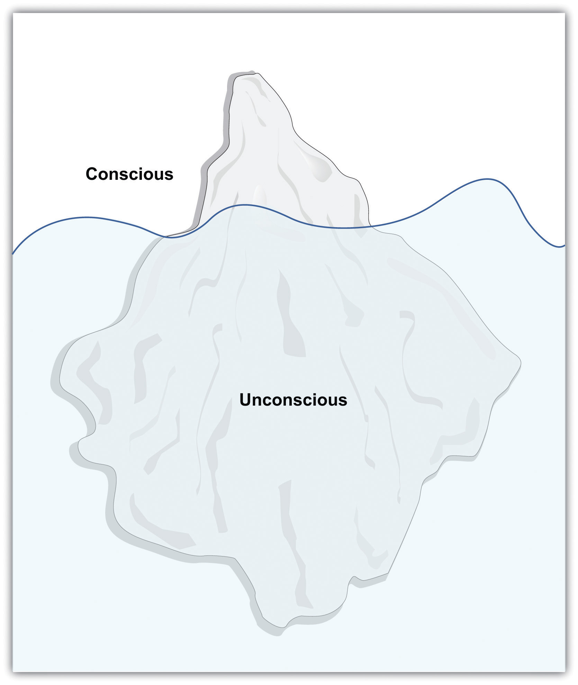
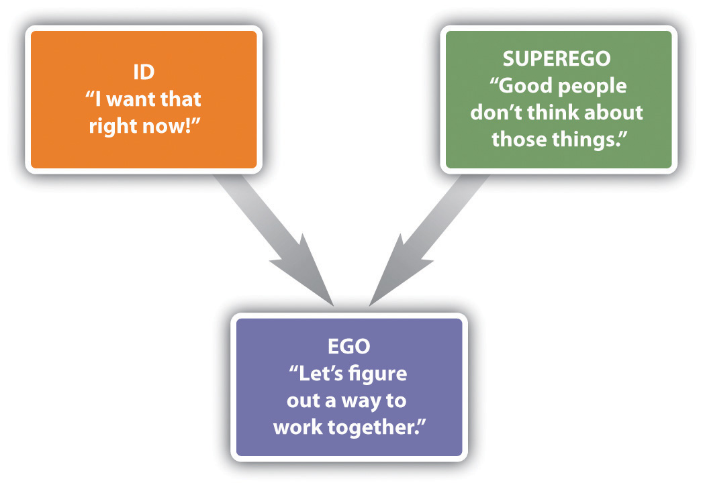
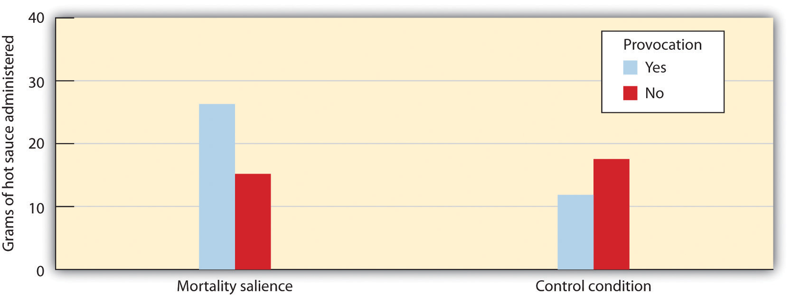
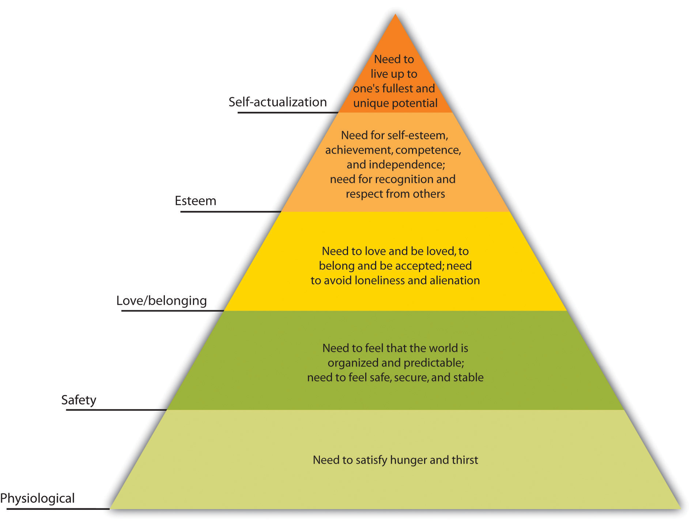
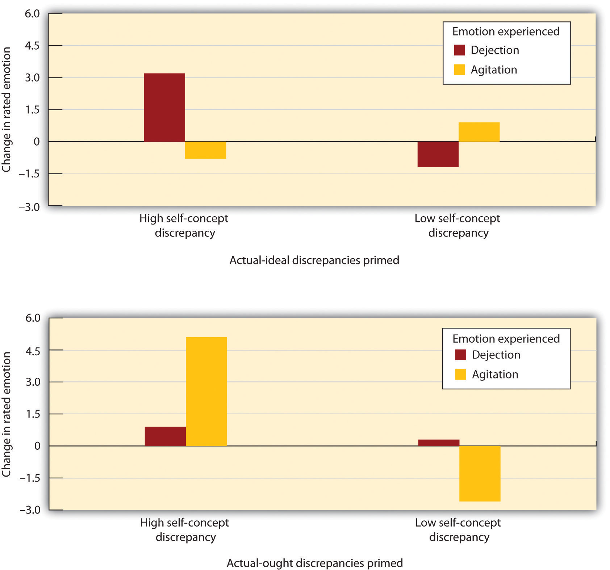

Although measures such as the Big Five and the Minnesota Multiphasic Personality Inventory (MMPI) are able to effectively assess personality, they do not say much about where personality comes from. In this section we will consider two major theories of the origin of personality: psychodynamic and humanistic approaches.
One of the most important psychological approaches to understanding personality is based on the theorizing of the Austrian physician and psychologist Sigmund Freud (1856–1939), who founded what today is known as the psychodynamic approachAn approach to understanding human behavior that focuses on the role of unconscious thoughts, feelings and memories. to understanding personality. Many people know about Freud because his work has had a huge impact on our everyday thinking about psychology, and the psychodynamic approach is one of the most important approaches to psychological therapy (Roudinesco, 2003; Taylor, 2009).Roudinesco, E. (2003). Why psychoanalysis? New York, NY: Columbia University Press; Taylor, E. (2009). The mystery of personality: A history of psychodynamic theories. New York, NY: Springer Science + Business Media. Freud is probably the best known of all psychologists, in part because of his impressive observation and analyses of personality (there are 24 volumes of his writings). As is true of all theories, many of Freud’s ingenious ideas have turned out to be at least partially incorrect, and yet other aspects of his theories are still influencing psychology.
Freud was influenced by the work of the French neurologist Jean-Martin Charcot (1825–1893), who had been interviewing patients (almost all women) who were experiencing what was at the time known as hysteria. Although it is no longer used to describe a psychological disorder, hysteria at the time referred to a set of personality and physical symptoms that included chronic pain, fainting, seizures, and paralysis.
Charcot could find no biological reason for the symptoms. For instance, some women experienced a loss of feeling in their hands and yet not in their arms, and this seemed impossible given that the nerves in the arms are the same that are in the hands. Charcot was experimenting with the use of hypnosis, and he and Freud found that under hypnosis many of the hysterical patients reported having experienced a traumatic sexual experience, such as sexual abuse, as children (Dolnick, 1998).Dolnick, E. (1998). Madness on the couch: Blaming the victim in the heyday of psychoanalysis. New York, NY: Simon & Schuster.
Freud and Charcot also found that during hypnosis the remembering of the trauma was often accompanied by an outpouring of emotion, known as catharsis, and that following the catharsis the patient’s symptoms were frequently reduced in severity. These observations led Freud and Charcot to conclude that these disorders were caused by psychological rather than physiological factors.
Freud used the observations that he and Charcot had made to develop his theory regarding the sources of personality and behavior, and his insights are central to the fundamental themes of psychology. In terms of free will, Freud did not believe that we were able to control our own behaviors. Rather, he believed that all behaviors are predetermined by motivations that lie outside our awareness, in the unconscious. These forces show themselves in our dreams, in neurotic symptoms such as obsessions, while we are under hypnosis, and in Freudian “slips of the tongue” in which people reveal their unconscious desires in language. Freud argued that we rarely understand why we do what we do, although we can make up explanations for our behaviors after the fact. For Freud the mind was like an iceberg, with the many motivations of the unconscious being much larger, but also out of sight, in comparison to the consciousness of which we are aware (Figure 11.8 "Mind as Iceberg").
Figure 11.8 Mind as Iceberg
In Sigmund Freud’s conceptualization of personality, the most important motivations are unconscious, just as the major part of an iceberg is under water.
Freud proposed that the mind is divided into three components: id, ego, and superego, and that the interactions and conflicts among the components create personality (Freud, 1923/1943).Freud, S. (1923/1949). The ego and the id. London, England: Hogarth Press. (Original work published 1923) According to Freudian theory, the idIn psychodynamic psychology, the component of personality that forms the basis of our most primitive impulses. is the component of personality that forms the basis of our most primitive impulses. The id is entirely unconscious, and it drives our most important motivations, including the sexual drive (libido) and the aggressive or destructive drive (Thanatos). According to Freud, the id is driven by the pleasure principle—the desire for immediate gratification of our sexual and aggressive urges. The id is why we smoke cigarettes, drink alcohol, view pornography, tell mean jokes about people, and engage in other fun or harmful behaviors, often at the cost of doing more productive activities.
In stark contrast to the id, the superegoIn psychodynamic psychology, the component of personality that represents our sense of morality and oughts. represents our sense of morality and oughts. The superego tell us all the things that we shouldn’t do, or the duties and obligations of society. The superego strives for perfection, and when we fail to live up to its demands we feel guilty.
In contrast to the id, which is about the pleasure principle, the function of the ego is based on the reality principle—the idea that we must delay gratification of our basic motivations until the appropriate time with the appropriate outlet. The egoIn psychodynamic psychology, the component of personality that is the largely conscious controller or decision-maker of personality. is the largely conscious controller or decision-maker of personality. The ego serves as the intermediary between the desires of the id and the constraints of society contained in the superego (Figure 11.9 "Ego, Id, and Superego in Interaction"). We may wish to scream, yell, or hit, and yet our ego normally tells us to wait, reflect, and choose a more appropriate response.
Figure 11.9 Ego, Id, and Superego in Interaction
Freud believed that psychological disorders, and particularly the experience of anxiety, occur when there is conflict or imbalance among the motivations of the id, ego, and superego. When the ego finds that the id is pressing too hard for immediate pleasure, it attempts to correct for this problem, often through the use of defense mechanismsUnconscious psychological strategies used to cope with anxiety and to maintain a positive self-image.—unconscious psychological strategies used to cope with anxiety and to maintain a positive self-image. Freud believed that the defense mechanisms were essential for effective coping with everyday life, but that any of them could be overused (Table 11.4 "The Major Freudian Defense Mechanisms").
Table 11.4 The Major Freudian Defense Mechanisms
| Defense mechanism | Definition | Possible behavioral example |
|---|---|---|
| Displacement | Diverting threatening impulses away from the source of the anxiety and toward a more acceptable source | A student who is angry at her professor for a low grade lashes out at her roommate, who is a safer target of her anger. |
| Projection | Disguising threatening impulses by attributing them to others | A man with powerful unconscious sexual desires for women claims that women use him as a sex object. |
| Rationalization | Generating self-justifying explanations for our negative behaviors | A drama student convinces herself that getting the part in the play wasn’t that important after all. |
| Reaction formation | Making unacceptable motivations appear as their exact opposite | Jane is sexually attracted to friend Jake, but she claims in public that she intensely dislikes him. |
| Regression | Retreating to an earlier, more childlike, and safer stage of development | A college student who is worried about an important test begins to suck on his finger. |
| Repression (or denial) | Pushing anxiety-arousing thoughts into the unconscious | A person who witnesses his parents having sex is later unable to remember anything about the event. |
| Sublimation | Channeling unacceptable sexual or aggressive desires into acceptable activities | A person participates in sports to sublimate aggressive drives. A person creates music or art to sublimate sexual drives. |
The most controversial, and least scientifically valid, part of Freudian theory is its explanations of personality development. Freud argued that personality is developed through a series of psychosexual stages, each focusing on pleasure from a different part of the body (Table 11.5 "Freud’s Stages of Psychosexual Development"). Freud believed that sexuality begins in infancy, and that the appropriate resolution of each stage has implications for later personality development.
Table 11.5 Freud’s Stages of Psychosexual Development
| Stage | Approximate ages | Description |
|---|---|---|
| Oral | Birth to 18 months | Pleasure comes from the mouth in the form of sucking, biting, and chewing. |
| Anal | 18 months to 3 years | Pleasure comes from bowel and bladder elimination and the constraints of toilet training. |
| Phallic | 3 years to 6 years | Pleasure comes from the genitals, and the conflict is with sexual desires for the opposite-sex parent. |
| Latency | 6 years to puberty | Sexual feelings are less important. |
| Genital | Puberty and older | If prior stages have been properly reached, mature sexual orientation develops. |
In the first of Freud’s proposed stages of psychosexual development, which begins at birth and lasts until about 18 months of age, the focus is on the mouth. During this oral stage, the infant obtains sexual pleasure by sucking and drinking. Infants who receive either too little or too much gratification become fixated or “locked” in the oral stage, and are likely to regress to these points of fixation under stress, even as adults. According to Freud, a child who receives too little oral gratification (e.g., who was underfed or neglected) will become orally dependent as an adult and be likely to manipulate others to fulfill his or her needs rather than becoming independent. On the other hand, the child who was overfed or overly gratified will resist growing up and try to return to the prior state of dependency by acting helpless, demanding satisfaction from others, and acting in a needy way.
The anal stage, lasting from about 18 months to 3 years of age is when children first experience psychological conflict. During this stage children desire to experience pleasure through bowel movements, but they are also being toilet trained to delay this gratification. Freud believed that if this toilet training was either too harsh or too lenient, children would become fixated in the anal stage and become likely to regress to this stage under stress as adults. If the child received too little anal gratification (i.e., if the parents had been very harsh about toilet training), the adult personality will be anal retentive—stingy, with a compulsive seeking of order and tidiness. On the other hand, if the parents had been too lenient, the anal expulsive personality results, characterized by a lack of self-control and a tendency toward messiness and carelessness.
The phallic stage, which lasts from age 3 to age 6 is when the penis (for boys) and clitoris (for girls) become the primary erogenous zone for sexual pleasure. During this stage, Freud believed that children develop a powerful but unconscious attraction for the opposite-sex parent, as well as a desire to eliminate the same-sex parent as a rival. Freud based his theory of sexual development in boys (the “Oedipus complex”) on the Greek mythological character Oedipus, who unknowingly killed his father and married his mother, and then put his own eyes out when he learned what he had done. Freud argued that boys will normally eventually abandon their love of the mother, and instead identify with the father, also taking on the father’s personality characteristics, but that boys who do not successfully resolve the Oedipus complex will experience psychological problems later in life. Although it was not as important in Freud’s theorizing, in girls the phallic stage is often termed the “Electra complex,” after the Greek character who avenged her father’s murder by killing her mother. Freud believed that girls frequently experienced penis envy, the sense of deprivation supposedly experienced by girls because they do not have a penis.
The latency stage is a period of relative calm that lasts from about 6 years to 12 years. During this time, Freud believed that sexual impulses were repressed, leading boys and girls to have little or no interest in members of the opposite sex.
The fifth and last stage, the genital stage, begins about 12 years of age and lasts into adulthood. According to Freud, sexual impulses return during this time frame, and if development has proceeded normally to this point, the child is able to move into the development of mature romantic relationships. But if earlier problems have not been appropriately resolved, difficulties with establishing intimate love attachments are likely.
Freudian theory was so popular that it led to a number of followers, including many of Freud’s own students, who developed, modified, and expanded his theories. Taken together, these approaches are known as neo-Freudian theoriesTheories based on Freudian principles that emphasize the role of the unconscious and early experience in shaping personality but place less evidence on sexuality as the primary motivating force in personality and are more optimistic concerning the prospects for personality growth and change in personality in adults.. The neo-Freudian theories are theories based on Freudian principles that emphasize the role of the unconscious and early experience in shaping personality but place less evidence on sexuality as the primary motivating force in personality and are more optimistic concerning the prospects for personality growth and change in personality in adults.
Alfred Adler (1870–1937) was a follower of Freud who developed his own interpretation of Freudian theory. Adler proposed that the primary motivation in human personality was not sex or aggression, but rather the striving for superiority. According to Adler, we desire to be better than others and we accomplish this goal by creating a unique and valuable life. We may attempt to satisfy our need for superiority through our school or professional accomplishments, or by our enjoyment of music, athletics, or other activities that seem important to us.
Adler believed that psychological disorders begin in early childhood. He argued that children who are either overly nurtured or overly neglected by their parents are later likely to develop an inferiority complex—a psychological state in which people feel that they are not living up to expectations, leading them to have low self-esteem, with a tendency to try to overcompensate for the negative feelings. People with an inferiority complex often attempt to demonstrate their superiority to others at all costs, even if it means humiliating, dominating, or alienating them. According to Adler, most psychological disorders result from misguided attempts to compensate for the inferiority complex in order meet the goal of superiority.
Carl Jung (1875–1961) was another student of Freud who developed his own theories about personality. Jung agreed with Freud about the power of the unconscious but felt that Freud overemphasized the importance of sexuality. Jung argued that in addition to the personal unconscious, there was also a collective unconsciousAccording to Carl Jung, a collection of shared ancestral memories., or a collection of shared ancestral memories. Jung believed that the collective unconscious contains a variety of archetypes, or cross-culturally universal symbols, which explain the similarities among people in their emotional reactions to many stimuli. Important archetypes include the mother, the goddess, the hero, and the mandala or circle, which Jung believed symbolized a desire for wholeness or unity. For Jung, the underlying motivation that guides successful personality is self-realization, or learning about and developing the self to the fullest possible extent.
Karen Horney (the last syllable of her last name rhymes with “eye”; 1855–1952), was a German physician who applied Freudian theories to create a personality theory that she thought was more balanced between men and women. Horney believed that parts of Freudian theory, and particularly the ideas of the Oedipus complex and penis envy, were biased against women. Horney argued that women’s sense of inferiority was not due to their lack of a penis but rather to their dependency on men, an approach that the culture made it difficult for them to break from. For Horney, the underlying motivation that guides personality development is the desire for security, the ability to develop appropriate and supportive relationships with others.
Another important neo-Freudian was Erich Fromm (1900–1980). Fromm’s focus was on the negative impact of technology, arguing that the increases in its use have led people to feel increasingly isolated from others. Fromm believed that the independence that technology brings us also creates the need “escape from freedom,” that is, to become closer to others.
Fromm believed that the primary human motivation was to escape the fear of death, and contemporary research has shown how our concerns about dying can influence our behavior. In this research, people have been made to confront their death by writing about it or otherwise being reminded of it, and effects on their behavior are then observed. In one relevant study, McGregor et al. (1998)McGregor, H. A., Lieberman, J. D., Greenberg, J., Solomon, S., Arndt, J., Simon, L.,…Pyszczynski, T. (1998). Terror management and aggression: Evidence that mortality salience motivates aggression against worldview-threatening others. Journal of Personality and Social Psychology, 74(3), 590–605. demonstrated that people who are provoked may be particularly aggressive after they have been reminded of the possibility of their own death. The participants in the study had been selected, on the basis of prior reporting, to have either politically liberal or politically conservative views. When they arrived at the lab they were asked to write a short paragraph describing their opinion of politics in the United States. In addition, half of the participants (the mortality salient condition) were asked to “briefly describe the emotions that the thought of your own death arouses in you” and to “jot down as specifically as you can, what you think will happen to you as you physically die, and once you are physically dead.” Participants in the exam control condition also thought about a negative event, but not one associated with a fear of death. They were instructed to “please briefly describe the emotions that the thought of your next important exam arouses in you” and to “jot down as specifically as you can, what you think will happen to you as you physically take your next exam, and once you are physically taking your next exam.”
Then the participants read the essay that had supposedly just been written by another person. (The other person did not exist, but the participants didn’t know this until the end of the experiment.) The essay that they read had been prepared by the experimenters to be very negative toward politically liberal views or to be very negative toward politically conservative views. Thus one-half of the participants were provoked by the other person by reading a statement that strongly conflicted with their own political beliefs, whereas the other half read an essay in which the other person’s views supported their own (liberal or conservative) beliefs.
At this point the participants moved on to what they thought was a completely separate study in which they were to be tasting and giving their impression of some foods. Furthermore, they were told that it was necessary for the participants in the research to administer the food samples to each other. At this point, the participants found out that the food they were going to be sampling was spicy hot sauce and that they were going to be administering the sauce to the very person whose essay they had just read. In addition, the participants read some information about the other person that indicated that he very much disliked eating spicy food. Participants were given a taste of the hot sauce (it was really hot!) and then instructed to place a quantity of it into a cup for the other person to sample. Furthermore, they were told that the other person would have to eat all the sauce.
As you can see in Figure 11.10 "Aggression as a Function of Mortality Salience and Provocation", McGregor et al. found that the participants who had not been reminded of their own death, even if they had been insulted by the partner, did not retaliate by giving him a lot of hot sauce to eat. On the other hand, the participants who were both provoked by the other person and who had also been reminded of their own death administered significantly more hot sauce than did the participants in the other three conditions. McGregor et al. (1998) argued that thinking about one’s own death creates a strong concern with maintaining one’s one cherished worldviews (in this case our political beliefs). When we are concerned about dying we become more motivated to defend these important beliefs from the challenges made by others, in this case by aggressing through the hot sauce.
Figure 11.10 Aggression as a Function of Mortality Salience and Provocation
Participants who had been provoked by a stranger who disagreed with them on important opinions, and who had also been reminded of their own death, administered significantly more unpleasant hot sauce to the partner than did the participants in the other three conditions.
Source: Adapted from McGregor, H. A., Lieberman, J. D., Greenberg, J., Solomon, S., Arndt, J., Simon, L.,…Pyszczynski, T. (1998). Terror management and aggression: Evidence that mortality salience motivates aggression against worldview-threatening others. Journal of Personality and Social Psychology, 74(3), 590–605.
Freud has probably exerted a greater impact on the public’s understanding of personality than any other thinker, and he has also in large part defined the field of psychology. Although Freudian psychologists no longer talk about oral, anal, or genital “fixations,” they do continue to believe that our childhood experiences and unconscious motivations shape our personalities and our attachments with others, and they still make use of psychodynamic concepts when they conduct psychological therapy.
Nevertheless, Freud’s theories, as well as those of the neo-Freudians, have in many cases failed to pass the test of empiricism, and as a result they are less influential now than they have been in the past (Crews, 1998).Crews, F. C. (1998). Unauthorized Freud: Doubters confront a legend. New York, NY: Viking Press. The problems are first, that it has proved to be difficult to rigorously test Freudian theory because the predictions that it makes (particularly those regarding defense mechanisms) are often vague and unfalsifiable, and second, that the aspects of the theory that can be tested often have not received much empirical support.
As examples, although Freud claimed that children exposed to overly harsh toilet training would become fixated in the anal stage and thus be prone to excessive neatness, stinginess, and stubbornness in adulthood, research has found few reliable associations between toilet training practices and adult personality (Fisher & Greenberg, 1996).Fisher, S., & Greenberg, R. P. (1996). Freud scientifically reappraised: Testing the theories and therapy. Oxford, England: John Wiley & Sons. And since the time of Freud, the need to repress sexual desires would seem to have become much less necessary as societies have tolerated a wider variety of sexual practices. And yet the psychological disorders that Freud thought we caused by this repression have not decreased.
There is also little scientific support for most of the Freudian defense mechanisms. For example, studies have failed to yield evidence for the existence of repression. People who are exposed to traumatic experiences in war have been found to remember their traumas only too well (Kihlstrom, 1997).Kihlstrom, J. F. (1997). Memory, abuse, and science. American Psychologist, 52(9), 994–995. Although we may attempt to push information that is anxiety-arousing into our unconscious, this often has the ironic effect of making us think about the information even more strongly than if we hadn’t tried to repress it (Newman, Duff, & Baumeister, 1997).Newman, L. S., Duff, K. J., & Baumeister, R. F. (1997). A new look at defensive projection: Thought suppression, accessibility, and biased person perception. Journal of Personality and Social Psychology, 72(5), 980–1001. It is true that children remember little of their childhood experiences, but this seems to be true of both negative as well as positive experiences, is true for animals as well, and probably is better explained in terms of the brain’s inability to form long-term memories than in terms of repression. On the other hand, Freud’s important idea that expressing or talking through one’s difficulties can be psychologically helpful has been supported in current research (Baddeley & Pennebaker, 2009)Baddeley, J. L., & Pennebaker, J. W. (2009). Expressive writing. In W. T. O’Donohue & J. E. Fisher (Eds.), General principles and empirically supported techniques of cognitive behavior therapy (pp. 295–299). Hoboken, NJ: John Wiley & Sons. and has become a mainstay of psychological therapy.
A particular problem for testing Freudian theories is that almost anything that conflicts with a prediction based in Freudian theory can be explained away in terms of the use of a defense mechanism. A man who expresses a lot of anger toward his father may be seen via Freudian theory to be experiencing the Oedipus complex, which includes conflict with the father. But a man who expresses no anger at all toward the father also may be seen as experiencing the Oedipus complex by repressing the anger. Because Freud hypothesized that either was possible, but did not specify when repression would or would not occur, the theory is difficult to falsify.
In terms of the important role of the unconscious, Freud seems to have been at least in part correct. More and more research demonstrates that a large part of everyday behavior is driven by processes that are outside our conscious awareness (Kihlstrom, 1987).Kihlstrom, J. F. (1987). The cognitive unconscious. Science, 237(4821), 1445–1452. And yet, although our unconscious motivations influence every aspect of our learning and behavior Freud probably overestimated the extent to which these unconscious motivations are primarily sexual and aggressive.
Taken together, it is fair to say that Freudian theory, like most psychological theories, was not entirely correct and that it has had to be modified over time as the results of new studies have become available. But the fundamental ideas about personality that Freud proposed, as well as the use of talk therapy as an essential component of therapy, are nevertheless still a major part of psychology and are used by clinical psychologists every day.
Psychoanalytic models of personality were complemented during the 1950s and 1960s by the theories of humanistic psychologistsAn approach to psychology that embraces the notions of self-esteem, self-actualization, and free will.. In contrast to the proponents of psychoanalysis, humanists embraced the notion of free will. Arguing that people are free to choose their own lives and make their own decisions, humanistic psychologists focused on the underlying motivations that they believed drove personality, focusing on the nature of the self-conceptThe set of beliefs about who we are., the set of beliefs about who we are, and self-esteemPositive feelings about the self., our positive feelings about the self.
One of the most important humanists, Abraham Maslow (1908–1970), conceptualized personality in terms of a pyramid-shaped hierarchy of motives (Figure 11.11 "Maslow’s Hierarchy of Needs"). At the base of the pyramid are the lowest-level motivations, including hunger and thirst, and safety and belongingness. Maslow argued that only when people are able to meet the lower-level needs are they able to move on to achieve the higher-level needs of self-esteem, and eventually self-actualizationThe motivation to develop our innate potential to the fullest possible extent., which is the motivation to develop our innate potential to the fullest possible extent.
Maslow studied how successful people, including Albert Einstein, Abraham Lincoln, Martin Luther King Jr., Helen Keller, and Mahatma Gandhi had been able to lead such successful and productive lives. Maslow (1970)Maslow, Abraham (1970). Motivation and personality (2nd ed.). New York, NY: Harper. believed that self-actualized people are creative, spontaneous, and loving of themselves and others. They tend to have a few deep friendships rather than many superficial ones, and are generally private. He felt that these individuals do not need to conform to the opinions of others because they are very confident and thus free to express unpopular opinions. Self-actualized people are also likely to have peak experiences, or transcendent moments of tranquility accompanied by a strong sense of connection with others.
Figure 11.11 Maslow’s Hierarchy of Needs
Abraham Maslow conceptualized personality in terms of a hierarchy of needs. The highest of these motivations is self-actualization.
Perhaps the best-known humanistic theorist is Carl Rogers (1902–1987). Rogers was positive about human nature, viewing people as primarily moral and helpful to others, and believed that we can achieve our full potential for emotional fulfillment if the self-concept is characterized by unconditional positive regardBehaviors including being genuine, open to experience, transparent, able to listen to others, and self-disclosing and empathic.—a set of behaviors including being genuine, open to experience, transparent, able to listen to others, and self-disclosing and empathic. When we treat ourselves or others with unconditional positive regard, we express understanding and support, even while we may acknowledge failings. Unconditional positive regard allows us to admit our fears and failures, to drop our pretenses, and yet at the same time to feel completely accepted for what we are. The principle of unconditional positive regard has become a foundation of psychological therapy; therapists who use it in their practice are more effective than those who do not (Prochaska & Norcross, 2007; Yalom, 1995).Prochaska, J. O., & Norcross, J. C. (2007). Systems of psychotherapy: A transtheoretical analysis (6th ed.). Pacific Grove, CA: Brooks/Cole; Yalom, I. (1995). Introduction. In C. Rogers, A way of being. (1980). New York, NY: Houghton Mifflin.
Although there are critiques of the humanistic psychologists (e.g., that Maslow focused on historically productive rather than destructive personalities in his research and thus drew overly optimistic conclusions about the capacity of people to do good), the ideas of humanism are so powerful and optimistic that they have continued to influence both everyday experiences as well as psychology. Today the positive psychology movement argues for many of these ideas, and research has documented the extent to which thinking positively and openly has important positive consequences for our relationships, our life satisfaction, and our psychological and physical health (Seligman & Csikszentmihalyi, 2000).Seligman, M. E. P., & Csikszentmihalyi, M. (2000). Positive psychology: An introduction. American Psychologist, 55(1), 5–14.
Tory Higgins and his colleagues (Higgins, Bond, Klein, & Strauman, 1986; Strauman & Higgins, 1988)Higgins, E. T., Bond, R. N., Klein, R., & Strauman, T. (1986). Self-discrepancies and emotional vulnerability: How magnitude, accessibility, and type of discrepancy influence affect. Journal of Personality and Social Psychology, 51(1), 5–15; Strauman, T. J., & Higgins, E. T. (1988). Self-discrepancies as predictors of vulnerability to distinct syndromes of chronic emotional distress. Journal of Personality, 56(4), 685–707. have studied how different aspects of the self-concept relate to personality characteristics. These researchers focused on the types of emotional distress that we might experience as a result of how we are currently evaluating our self-concept. Higgins proposes that the emotions we experience are determined both by our perceptions of how well our own behaviors meet up to the standards and goals we have provided ourselves (our internal standards) and by our perceptions of how others think about us (our external standards). Furthermore, Higgins argues that different types of self-discrepancies lead to different types of negative emotions.
In one of Higgins’s experiments (Higgins, Bond, Klein, & Strauman., 1986),Higgins, E. T., Bond, R. N., Klein, R., & Strauman, T. (1986). Self-discrepancies and emotional vulnerability: How magnitude, accessibility, and type of discrepancy influence affect. Journal of Personality and Social Psychology, 51(1), 5–15. participants were first asked to describe themselves using a self-report measure. The participants listed 10 thoughts that they thought described the kind of person they actually are; this is the actual self-concept. Then, participants also listed 10 thoughts that they thought described the type of person they would “ideally like to be” (the ideal self-concept) as well as 10 thoughts describing the way that someone else—for instance, a parent—thinks they “ought to be” (the ought self-concept).
Higgins then divided his participants into two groups. Those with low self-concept discrepancies were those who listed similar traits on all three lists. Their ideal, ought, and actual self-concepts were all pretty similar and so they were not considered to be vulnerable to threats to their self-concept. The other half of the participants, those with high self-concept discrepancies, were those for whom the traits listed on the ideal and ought lists were very different from those listed on the actual self list. These participants were expected to be vulnerable to threats to the self-concept.
Then, at a later research session, Higgins first asked people to express their current emotions, including those related to sadness and anxiety. After obtaining this baseline measure Higgins activated either ideal or ought discrepancies for the participants. Participants in the ideal self-discrepancy priming condition were asked to think about and discuss their own and their parents’ hopes and goals for them. Participants in the ought self-priming condition listed their own and their parents’ beliefs concerning their duty and obligations. Then all participants again indicated their current emotions.
As you can see in Figure 11.12 "Results From Higgins, Bond, Klein, and Strauman, 1986", for low self-concept discrepancy participants, thinking about their ideal or ought selves did not much change their emotions. For high self-concept discrepancy participants, however, priming the ideal self-concept increased their sadness and dejection, whereas priming the ought self-concept increased their anxiety and agitation. These results are consistent with the idea that discrepancies between the ideal and the actual self lead us to experience sadness, dissatisfaction, and other depression-related emotions, whereas discrepancies between the actual and ought self are more likely to lead to fear, worry, tension, and other anxiety-related emotions.
Figure 11.12 Results From Higgins, Bond, Klein, and Strauman, 1986
Higgins and his colleagues documented the impact of self-concept discrepancies on emotion. For participants with low self-concept discrepancies (right bars), seeing words that related to the self had little influence on emotions. For those with high self-concept discrepancies (left bars), priming the ideal self increased dejection whereas priming the ought self increased agitation.
Source: Adapted from Higgins, E. T., Bond, R. N., Klein, R., & Strauman, T. (1986). Self-discrepancies and emotional vulnerability: How magnitude, accessibility, and type of discrepancy influence affect. Journal of Personality and Social Psychology, 51(1), 5–15.
One of the critical aspects of Higgins’s approach is that, as is our personality, our feelings are also influenced both by our own behavior and by our expectations of how other people view us. This makes it clear that even though you might not care that much about achieving in school, your failure to do well may still produce negative emotions because you realize that your parents do think it is important.